Chris H — UX Researcher & Designer
Product discovery · Accessibility · Human-centred interaction
An Augmented Reality Training Solution for University of Winchester
Reducing staff workload and improving student access to camera training through augmented reality simulation. This case study was based upon a live-brief and submitted as part of a masters degree.
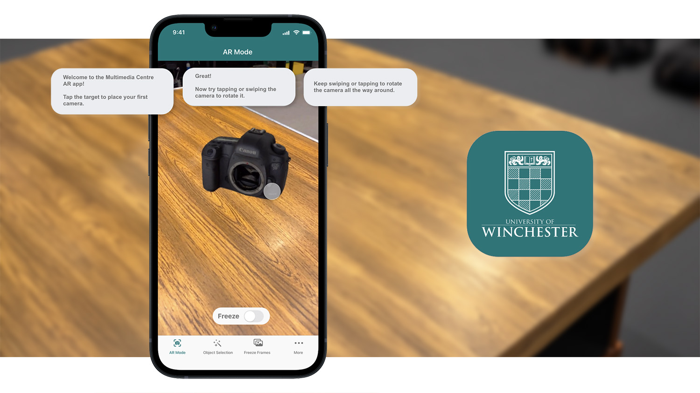
Overview
The University of Winchester's Multimedia Centre faces high demand for equipment training, creating long wait times and pressure on technical staff. I designed an augmented-reality mobile solution to support self-guided learning and reduce reliance on in-person sessions. Using mixed-methods research, analysing loan data and running focus groups, I developed student personas to assess technology acceptance and shape the design. Accessibility needs informed features such as a Freeze Frame mode for clearer AR guidance. The prototype secured funding for supporting hardware and enabled further exploration of a VR-based training system.
Problem
A reliance on in-person training for professional camera equipment has resulted in long wait times due to high staff workloads.
Without prior training, students cannot access camera loans to complete their assignments.
Initial Hypothesis
Delivering selected training sessions via an augmented-reality mobile application will decrease technician workload during peak demand periods.
The solution would need to:
- Be operated by students without the presence of a technician
- Enable asynchronous training
- Include accessibility features that promote equity
The Multimedia Centre staff have requested a proof-of-concept, which may secure further funding into this project.
Quantitative Research
Descriptive data analysis revealed spiking patterns in camera, supporting the concerns about capacity issues.
The University did not record training-booking data, but camera-loan patterns showed clear seasonal spikes aligned with term dates. From these trends, it was possible to infer periods of increased training demand and reduced equipment availability for training sessions.
- Camera loans increase suddenly and steeply between September-October and January-February.
- Training demand likely occurs before these spikes, with the reported 'bottleneck' causing the sudden spike phenomenon.
- Equipment availability for training could be reduced during spikes in camera loans.
Refined hypothesis:
If training can be delivered via an AR mobile application, then pressure on staff during peak periods will decrease and camera-loan spikes will be reduced
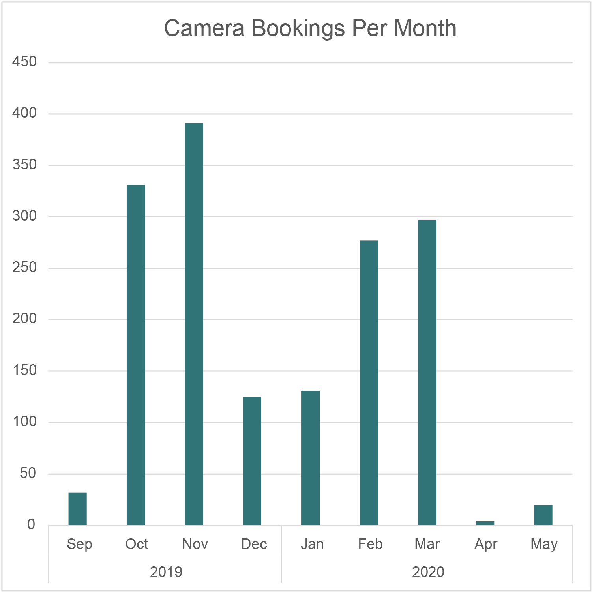
Qualitative Research
Focus groups highlighted several potential benefits of using a simulation for training.
Focus groups with technicians and training staff identified pain points across the entire training process. These were synthesised into an affinity diagram.
Pre-Training Administration
- Lack of online learning resources
- 1:1 training inefficient with large cohorts
- Admin for training requests is time-consuming
- Timetabled sessions clash with lectures
Preparing for Training
- Training preparation is time-consuming
- Preparation wasted due to non-attendance
- Slow student responses reduce equipment availability
The Training Session
- Students sometimes passive
- Difficult to demonstrate some equipment
- Students not always happy to attend in-person
- Training takes resources away from projects
Assessment
- Paper forms present GDPR concerns
- Paper forms not always appropriate
- Students feel pressured to sign forms
- Assessment can feel awkward
Post-Training
- Time consuming
- Inefficient filing system
- No revision materials available
Key opportunities:
- Asynchronous training could provide flexibility for students and remove 'awkward' feelings.
- Simulation removes set-up and pack-down time for technicians.
- Technician administrative duties could be reduced through automated assessment.
- AR could offer a safer method to demonstrate “what happens when things go wrong.”
- An AR solution could digitise previously paper-based forms, removing a data-protection concern.
Personas
Four student personas identified variance in engagement, confidence, knowledge, and attitude levels.
Focus group data produced four student personas. Several persona-informed situations were devised to pre-test technology acceptance. Each of these situations would be considered during the ideation and testing processes.
Jack
Proactive, meticulous, expects high-quality training.
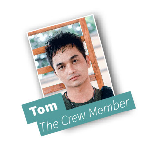
Tom
Practical, collaborative, prefers clarity and online research.
Sam
Finds equipment challenging, relies on peers, hesitant to ask staff.
Marina
Assertive, prefers individual training to overcome language barriers.
Content Audit
An audit of similar AR applications revealed several design patterns which enhanced their usability and accessibility.
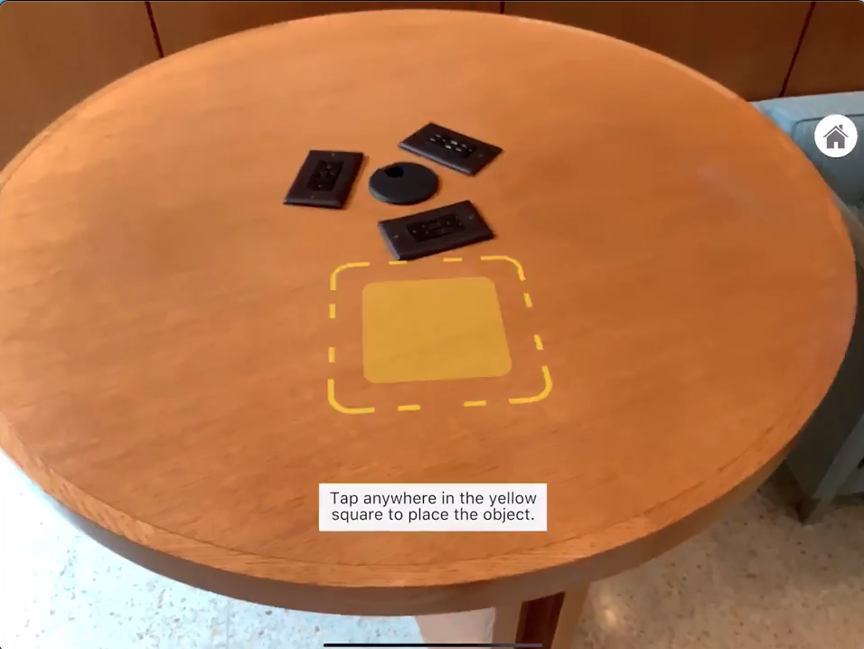
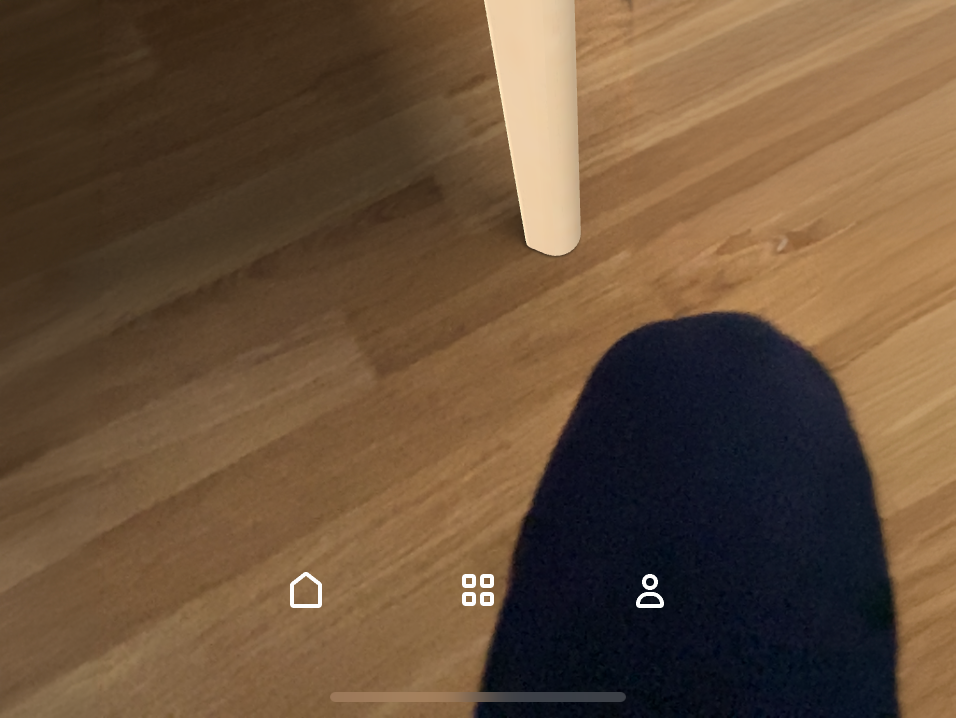
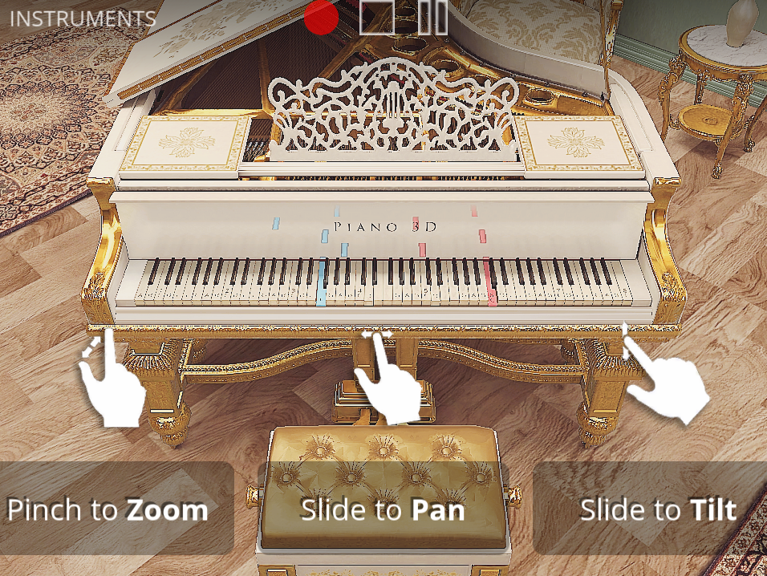
Findings
- An overlaid UI provided instruction and recognisable cues to access functionality, though translucent buttons limited vision-based accessibility.
- Contextual prompts and visible tap targets demonstrated system status.
- Navigation elements often mimicked the operating system, improving recognition and user control.
- Drawers of placeable objects mirrored real-world equivalents, supporting behavioural expectations.
- Error messages typically included instructions to help users recover from mistakes.
Secondary Research in Academic Journals
"Freeze Frame" functionality could increase accessibility for students experiencing motor or cognitive impairments.
A pause-and-review feature was implemented to let users temporarily stop the AR sequence and inspect their device's display comfortably before continuing (Herskovitz et al., 2020). This is particularly beneficial for students with unstable gait, involuntary movements, or cognitive impairments.
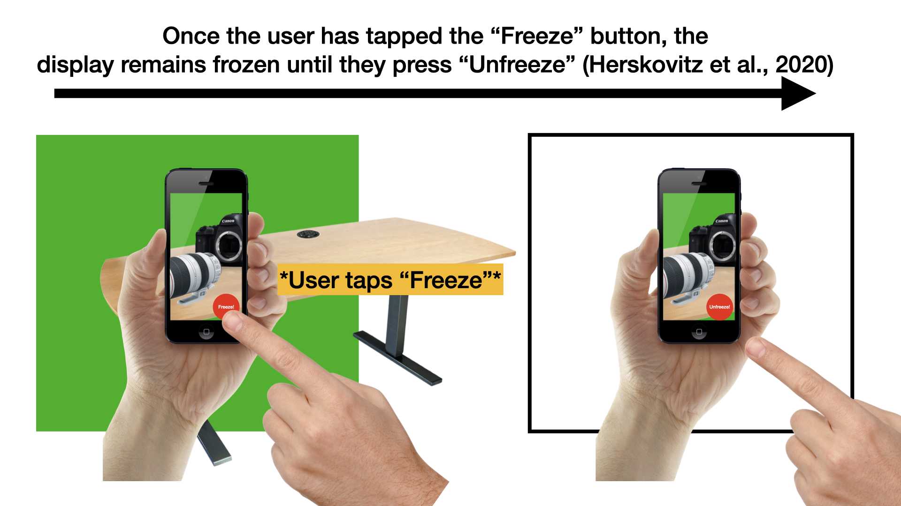
Application Task Flows
Two mandatory task flows formed the basis of design and testing.
Task Flow 1: Viewing Equipment in AR
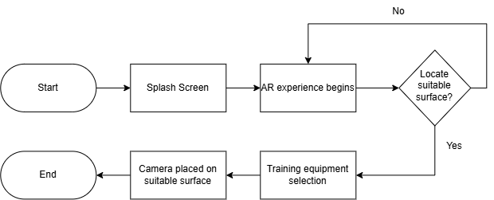
Task Flow 2: Use of Freeze Frame Functionality
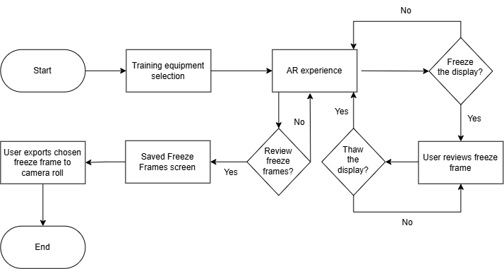
Ideation, Storyboarding & Sketching
A range of progressively detailed sketches were developed in parallel with regular consultation with training staff and students.
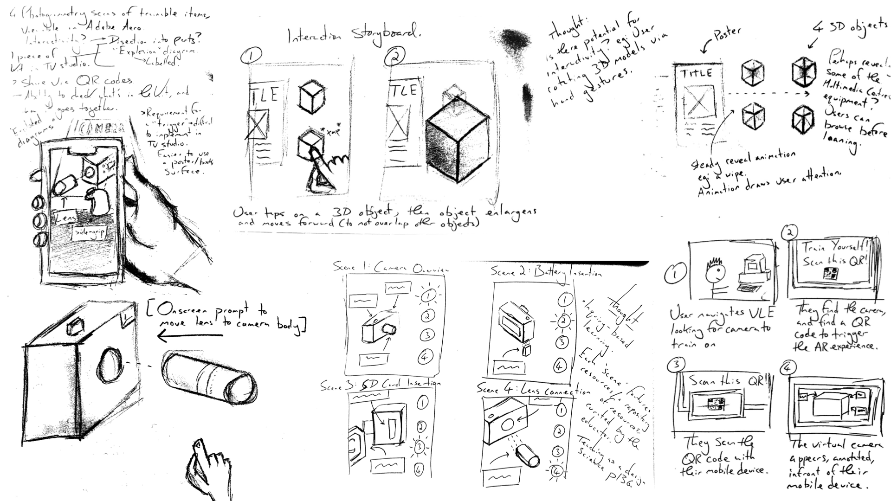
Wireframing & Interaction Design
Wireframes explored navigation, object drawers, tab bars, and interaction behaviours.
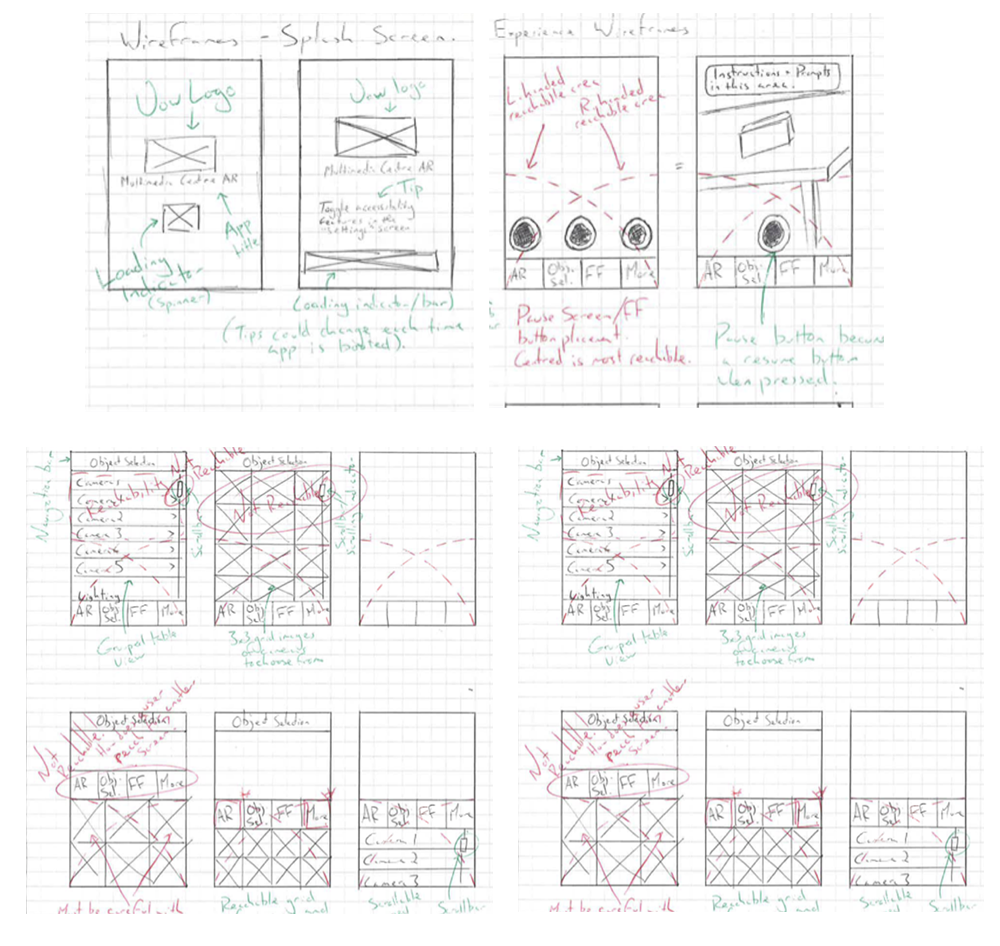
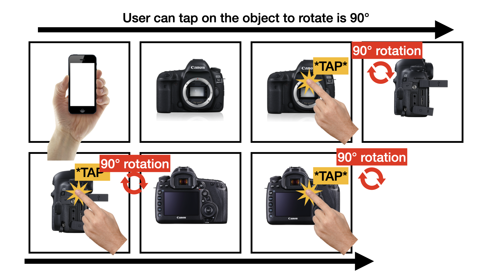
Paper Prototype Usability Testing
Test participants easily navigated using the tab bar, object drawers, and toggle switches.

Moderated usability testing with think-aloud protocols identified misunderstandings to be addressed during further iterations:
- The 'target' is often mistaken for an object, likely due to the limitations of paper prototyping and drawing skills.
- Users require repeated onboarding prompts to engage with the 'Freeze Frame' feature, indicating a need for clearer instructions
- There's confusion about whether a Freeze Frame is saved within the app or to the device's camera roll. More distinct terminology like 'Save' versus 'Export' may remediate this.
Medium Fidelity Prototyping
Apple's ARKit features were used to create a 3D model of a camera and to build an AR experience. This was tested in one of the University's TV studios.
High-Fidelity Design
The high-fidelity prototype was designed using Figma, with Apple's ARKit experience integrated and divided into three flows for demonstration purposes. Onboarding issues identified in usability testing were addressed using progressive onboarding - a series of written instructions that revealed information only when the user was ready. This design pattern is common across similar learning applications such as Duolingo.
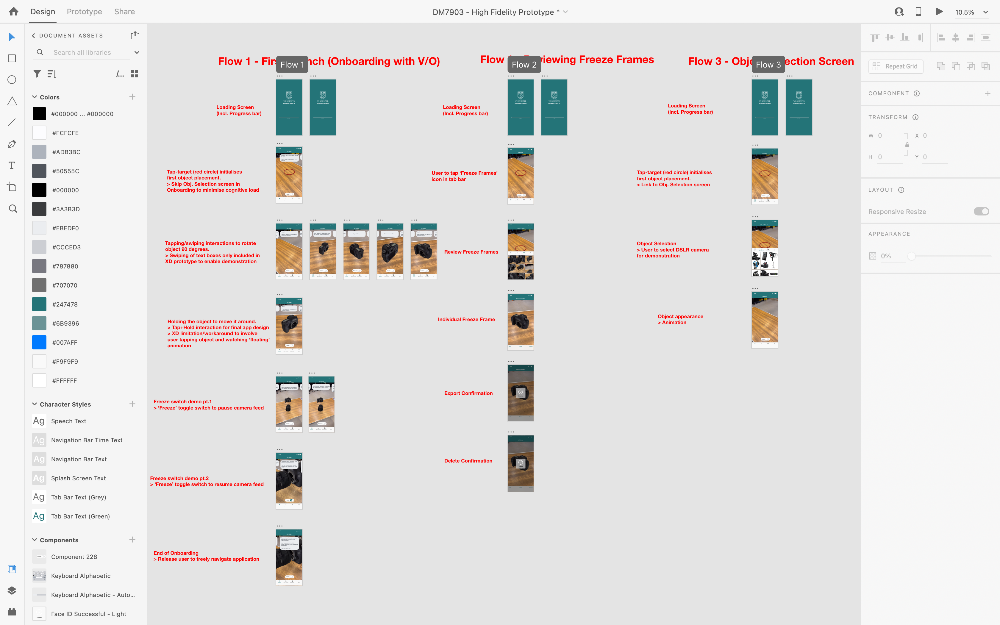
Functionality Highlights
- Users can access asynchronous training solution without attending in-person, reducing demand on technicians and camera equipment.
- Training demand can still be met when technician or camera equipment availability is low.
- Design patterns leverage learnt user behaviours from similar AR applications, enhancing recognition and control
- The “Freeze Frame” functionality allows users to pause the AR experience while they make observations in comfort.
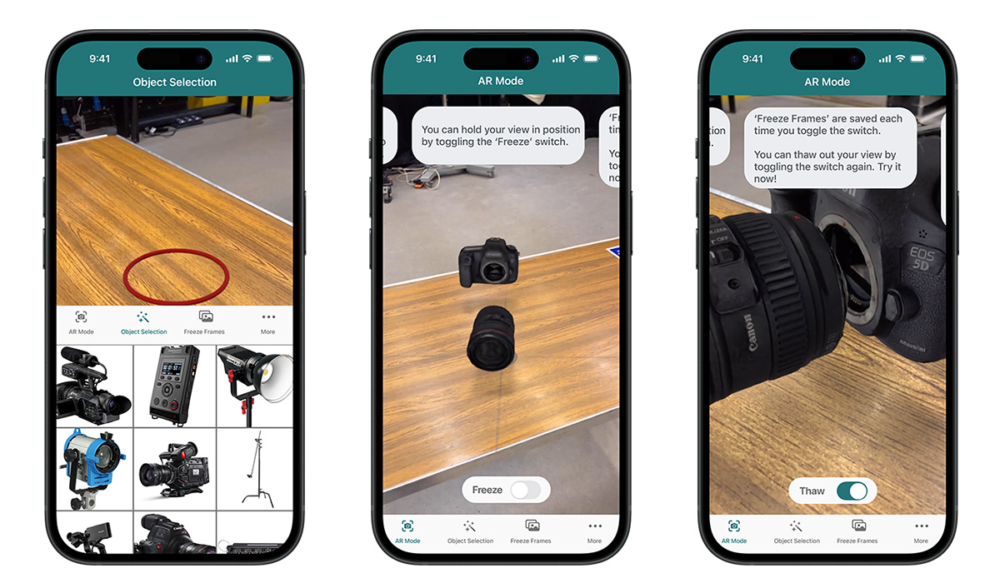
Lessons Learned
- Implementation of innovative features (i.e.: Freeze Frame functionality) may require additional guidance for users. Using existing design patterns can shortcut this to an extent.
- Low-fidelity wireframes can cause confusion, particularly when users struggle to distinguish AR content from interface elements like toggles and buttons.
References
Herskovitz, J., Wu, J., White, S., Pavel, A., Reyes, G., Guo, A. and Bigham, J. (2020). Making Mobile Augmented Reality Applications Accessible. ASSETS '20.
WebAIM (2012). Motor Disabilities - Types of Motor Disabilities.